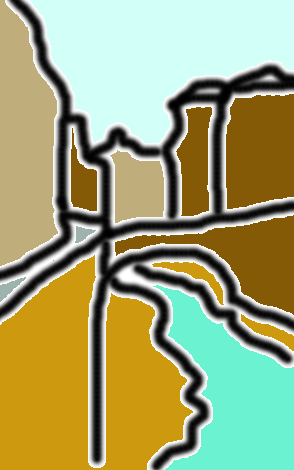

GOssTo and GOssToWeb
GOssTo and GOssToWeb are tools to calculate the semantic similarity between genes or terms in the Gene Ontology.
GOssTo is a command-line tool implemented in Java that can be run through an intuitive command-line interface or easily integrated as a library into a pipeline. It runs on Windows, GNU/Linux and MacOS. No installation is required. To use it, just download the file and run it.
GOssToWeb is a web enabled version of GOssTO – you can use it to calculate semantic similarities without the need to download and install the standalone version of GOssTO. Access GOssToWeb here.
GOssTo is free software released under the GPLv3 and its code can be downloaded here.
ConSAT
ConSAT is a command-line tool for automatic annotation of gene families. ConSAT is built on top of GFam, providing extra functionality and higher efficiency. It is implemented in Python.
ConSAT stands for “Consensus Signature Architecture Tool”. Using ConSAT on a set of protein sequences you can get their corresponding protein families. The protein families, for our purpose, are consensus domain architectures. Proteins within the same family are assumed to share many properties among them as they are assumed to descend from a common ancestor –that is, they are evolutionarily related. Thus, protein families can be of a good help in the study of large protein sets, moving us from the study of single sequences to the study of the set of families (the number of families found will be lower than the set of individual sequences). More details and documentation can be found here.
The way ConSAT builds the architectures is by combining two sources of data: (1) domain assignments from InterPro, and (2) domain assignments from GFams (our own library of putative domains). The combination is done in a way that no overlapping domains will be allowed, and maximising the sequence coverage. ConSAT assigns functional labels to the architectures in two flavours: Gene Ontology terms and free text English words.
ConSAT is also a web server with UniProtKB proteins having their architecture precomputed, and the possibility of accessing to ConSAT without having to use the terminal. It can be accessed here.
ConSAT is free software released under the GPLv3 and its code can be downloaded here.
DauroLab
 DauroLab is a toolbox written in Java for machine learning purposes. It is free software (released under the GNU GPL license, v. 3), and you can download the code from sourceforge (currently, no official release has been made, so you must download the code from the SVN repository).
{kind=link}
The development process, and some documentation can be found on the daurolab blog, where I also hope to receive some feedback.